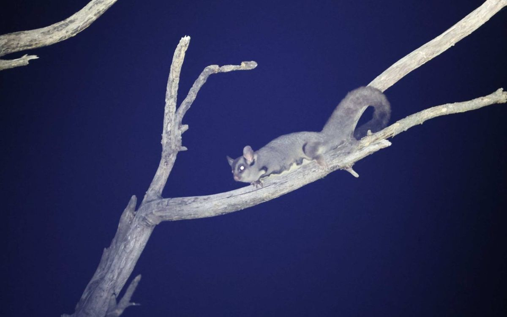

Image plan
Every image in the guide is a draft pulled from the workshop slides, so it is low resolution and marked “Draft image”. This page lists what went where, where it came from, and what each one still needs: a full-resolution file, a photographer credit, or permission.
| Section | Draft | What it shows | Source | Next step |
|---|---|---|---|---|
| 0.1 Start here |  | Burnt country coming back on one of the demonstration properties near Pomonal. longgully_s18_1 | John King, Pomonal talk | Ask presenter / landholder |
| 0.2 How this guide was made |   | Landholders setting up monitoring gear (left), and nest boxes built by the Stawell Men’s Shed (right). nocturnal_s15_1, birds_s06_2 | Project Platypus workshop slides | Ours — full-res only |
| 0.3 Why your block matters |    | Native vegetation across western Victoria before 1750 and today, and the 2024–25 fire scars over what is left. pests_s04_1, pests_s04_3, firescars_today | Elia’s introduction slides; vegetation mapping from DEECA | Ours — full-res only |
| 1.1 Bioregions and geology |  | Bioregions around the Grampians and Wimmera. readland_s06_1 | Yasmin Kelsall, ‘Reading the landscape’ talk; DEECA NatureKit | Ask presenter / landholder |
| 1.2 Finding your vegetation type |   | The same country mapped two ways: the vegetation that was there before 1750, and what remains today. Each colour is a different vegetation type. readland_s08_1, readland_s11_1 | Yasmin Kelsall talk; DEECA NatureKit | Ask presenter / landholder |
| 1.3 Your property’s fire history |  | Fire history of the Grampians National Park, 2005–2024 (left) and the 2025 fire (right). pests_s06_1 | Pauline Rudolph, Parks Victoria, Pomonal talk | Ask presenter / landholder |
| 2.1 The recovery timeline |  | Growth stages across the Grampians before and after the 2024–25 fires, against the ideal mix. After the fires most of the park is juvenile. gariwerd_s10_2 | Pauline Rudolph, Parks Victoria | Ask presenter / landholder |
| 1.2 Finding your vegetation type |  | Vegetation types mapped on and around the Pomonal property. readland_s27_1 | Yasmin Kelsall talk. Check the landholder is happy for the property to be identifiable | Ask presenter / landholder |
| 1.3 Your property’s fire history |  | Mapped fire history for the Pomonal property. readland_s26_1 | Yasmin Kelsall talk. Check the landholder is happy for the property to be identifiable | Ask presenter / landholder |
| 2.1 The recovery timeline |     | Recovery on one Pomonal property through the first months after the December 2024 fire. Stand-in until the same-vantage sequence is chosen. longgully_s10_2, longgully_s12_1, longgully_s13_2, longgully_s16_1 | John King, Pomonal talk. Confirm which photo is which interval | Ask presenter / landholder |
| 2.2 The return of sensitive plant species |  | Resprouting: new shoots bursting from buds under the bark within weeks of the fire. longgully_s10_1 | John King, Pomonal talk | Ask presenter / landholder |
| 2.2 The return of sensitive plant species |   | Mt Cassell Grevillea is killed by fire and comes back only from seed (left). Seedlings coming up through the ash bed (right). gariwerd_s11_2, gariwerd_s12_1 | Pauline Rudolph, Parks Victoria | Ask presenter / landholder |
| 2.2 The return of sensitive plant species |   | Grass trees flowering en masse after fire (left), and a beard orchid in the first spring (right). gariwerd_s17_2, longgully_s15_2 | Pauline Rudolph, Parks Victoria; John King | Ask presenter / landholder |
| 3.1 Setting up to watch |  | A marked photo point on burnt ground. The same frame, taken the same way each season, is the record. folders_008 | Project Platypus field photos, 2025 | Ours — full-res only |
| 3.1 Setting up to watch |  | Setting out a monitoring plot with a tape. gariwerd_s12_2 | Pauline Rudolph, Parks Victoria | Ask presenter / landholder |
| 3.2 Recording what species you have |  | Recording a plant on a phone. Every photo is a dated, located record. nocturnal_s15_2 | Project Platypus nocturnal workshop slides | Ours — full-res only |
| 3.3 Habitat structure survey |   | Landholders running a habitat structure survey, and the phone form it is recorded on. nocturnal_s15_3, nocturnal_s15_4 | Project Platypus workshop slides | Ours — full-res only |
| 3.4 Why birds? |  | A gang-gang cockatoo on a demonstration property after the fire. longgully_s14_1 | John King, Pomonal talk | Ask presenter / landholder |
| 3.5 Birds the traditional way |  | A bird survey under way on a demonstration property. birds_s07_2 | Project Platypus bird workshop slides | Ours — full-res only |
| 3.6 Birds the automated way |  | A landholder and project staff with a listening station and its solar panel. birds_s07_1 | Project Platypus bird workshop slides | Ours — full-res only |
| 3.8 Why nocturnal animals? |  | A sugar glider found during night surveys on one of the demonstration properties. pests_s51_1 | Project Platypus. Check landholder sign-off | Ask presenter / landholder |
| 3.9 Surveying nocturnal animals |   | A trail camera at a dam (left), and the software that sorts thousands of photos by species (right). nocturnal_s12_7, pests_s52_2 | Project Platypus nocturnal workshop slides | Ours — full-res only |
| 3.9 Surveying nocturnal animals |   | A glider picked up on a thermal scope (left), and spotlighting with a red torch (right). nocturnal_s20_1, nocturnal_s21_1 | Project Platypus nocturnal workshop slides | Ours — full-res only |
| 4.1 Why invasives are the priority |  | Footprints in the ash at 7 am, the morning after the fire. pests_s16_1 | Fire recovery pests talk. Confirm photographer | Ask presenter / landholder |
| 4.2 Weeds after fire — what to look for and where |   | A flush of weeds through burnt forest (left), and weed seedlings in the ash bed (right). pests_s36_4, pests_s36_1 | Fire recovery pests talk. Confirm photographer | Ask presenter / landholder |
| 4.3 Mapping, prioritising and controlling |     | One-leaf cape tulip and South African weed orchid. pests_s57_4, pests_s58_2, pests_s59_1, pests_s59_3 | Phil & Joan Bennett, Pomonal. Needs sign-off | Ask presenter / landholder |
| 4.3 Mapping, prioritising and controlling |  | Pulled weeds bagged to cook in the sun, so the corms can’t reshoot. pests_s60_1 | Phil & Joan Bennett, Pomonal. Needs sign-off | Ask presenter / landholder |
| 4.4 Pest animals |  | A fox on a project trail camera, identified automatically. pests_s52_4 | Project Platypus trail camera, 2026 | Ours — full-res only |
| 4.4 Pest animals |  | A fallow deer on a project trail camera. pests_s52_3 | Project Platypus trail camera, 2026 | Ours — full-res only |
| 4.4 Pest animals |  | A rabbit on a project trail camera. pests_s52_1 | Project Platypus trail camera, 2026 | Ours — full-res only |
| 4.5 Hollows |  | An owlet-nightjar in a tree hollow. folders_072 | © bim186, CC BY-NC (iNaturalist) | CC licence — keep attribution |
| 4.5 Hollows |  | A big old hollow-bearing tree after fire. folders_049 | © Hayley Jones, used with permission | Permission held |
| 4.6 Deciding whether you need boxes |  | A trail camera watching a nest box at night: the animals answer whether the box is needed. nocturnal_s12_6 | Project Platypus trail camera, 2026 | Ours — full-res only |
| 4.7 Boxes, carved hollows and pods |   | A nest box on a demonstration property, and its occupants. longgully_s21_2, longgully_s21_1 | John King, Pomonal talk | Ask presenter / landholder |
| 4.7 Boxes, carved hollows and pods |  | Habitat pods set out after the fire at Banksia Springs, Little Desert. banksia_s31_1 | Mirinda Thorpe, Banksia Springs talk | Ask presenter / landholder |
| 4.9 Do I need to replant? |  | Guarded plantings of Buloke and Hakea at Banksia Springs after the fire. banksia_s32_1 | Mirinda Thorpe, Banksia Springs talk; Trust for Nature | Ask presenter / landholder |
| 6.1 Start a species list |  | Banksia Springs in flower before the fire. A species list made in years like this is the record you’ll want afterwards. banksia_s10_4 | Mirinda Thorpe talk. Photo: Stuart Thorpe or Clive Crouch, to confirm | Ask presenter / landholder |
| 6.2 Photo points in your best country |    | The Banksia Springs gate photographed over the years: an accidental photo point that now shows how the country changed. banksia_s08_1, banksia_s08_2, banksia_s09_2 | Stuart & Kerrie Thorpe; Mirinda Thorpe talk | Ask presenter / landholder |
| 7.1 Who can help |  | BlazeAid volunteers pulling out burnt fencing at Banksia Springs. banksia_s20_2 | Mirinda Thorpe talk; BlazeAid | Ask presenter / landholder |
Still to find
- 1.4 — a tolerable-fire-interval graphic. Pauline Rudolph’s TFI status chart (Parks Victoria talk, slide 8) is a candidate.
- 4.6 — the hollow transect diagram. Needs drawing.
- 4.7 — a carved hollow and a log box. The website’s photo of Nils Karlsson (Calypto Hollows) demonstrating a log box would suit.
- 4.8 — dense eucalypt or wattle regrowth, and a thinning trial plot.
- 4.5 — the tree hollows talk deck and several CC photos in the hollow folder are cloud-only on this computer, so I couldn’t open them yet. More hollow images will come from there.
- Part 5 and 7.2 — probably none needed.
From platypus.org.au
I couldn’t download from the website from here, so these are listed for the next pass:
- Fire Recovery Partnership page: landholders on a bird survey with a BirdWeather station (3.5/3.6); a landholder on a floristic survey (3.3); the log box workshop (4.7); staff deploying a trail camera (3.9).
- Tail of the Squirrel Glider page: squirrel glider habitat 300 years ago and now. These maps show the fragmentation point in 0.3 more simply than the vegetation maps.
- Home page: Field Crew controlling Paterson’s curse (4.3).